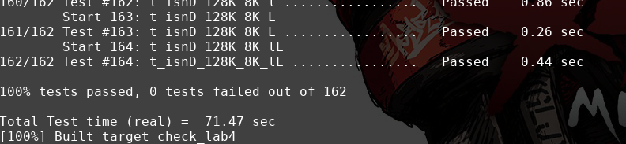

实现TCPConnection
TCPConnection实际上就是结合TCPReceiver和TCPSender结合实现一个TCP的有限状态机(TCP Finite State Machine (FSM)),也就是实现下面这一张实际运行的逻辑图
实现TCPConnection我修改了TCPReceiver和TCPSender一些接口的返回值例如将返回void修改成返回bool
详细的FSM可以看这个网页: TCP Finite State Machine
其次就是研究透彻tcp_state.cc,这个文件中描述了TCPConnection处于某个状态的时候，TCPSender和TCPReceiver应该处于什么状态，例如:当TCPConnection处于LISTEN状态的时候，TCPSender和TCPReceiver应该分别处于CLOSED和LISTEN状态,(TCPSender和TCPReceiver)的状态在lab2和lab3中有描述。
TCPConnection.hh
...
//为实现TCPConnection而增添的代码
bool _active{true};
bool _established{false};
bool _rst{false};
size_t _ms_since_last_segment_received{0};
void send_segments();
void fill_queue(std::queue<TCPSegment> &stream_queue);
void set_rst();
void test_end();
....
TCPConnection.cc
size_t TCPConnection::remaining_outbound_capacity() const { return _sender.stream_in().remaining_capacity(); }
size_t TCPConnection::bytes_in_flight() const { return _sender.bytes_in_flight(); }
size_t TCPConnection::unassembled_bytes() const { return _receiver.unassembled_bytes(); }
size_t TCPConnection::time_since_last_segment_received() const { return _ms_since_last_segment_received; }
void TCPConnection::set_rst() {
_active = false;
_rst = true;
_linger_after_streams_finish = false;
_sender.stream_in().set_error();
_receiver.stream_out().set_error();
if (_established)
send_segments();
}
void TCPConnection::test_end() {
if (_receiver.stream_out().input_ended() && !_sender.stream_in().eof() && _sender.next_seqno_absolute() > 0) {
_linger_after_streams_finish = false;
} else if (_receiver.stream_out().eof() && _sender.stream_in().eof() && unassembled_bytes() == 0 &&
bytes_in_flight() == 0 && _sender.fin_sent()) {
if (!_linger_after_streams_finish)
_active = false;
else if (_ms_since_last_segment_received >= 10 * _cfg.rt_timeout)
_active = false;
}
}
void TCPConnection::fill_queue(std::queue<TCPSegment> &stream_queue) {
TCPSegment tmp = stream_queue.front();
stream_queue.pop();
if (_receiver.ackno().has_value()) {
tmp.header().ack = true;
tmp.header().ackno = _receiver.ackno().value();
}
tmp.header().rst = _rst;
size_t window_size = _receiver.window_size();
tmp.header().win = window_size < std::numeric_limits<uint16_t>::max() ? static_cast<uint16_t>(window_size)
: std::numeric_limits<uint16_t>::max();
_segments_out.push(tmp);
return;
}
void TCPConnection::send_segments() {
std::queue<TCPSegment> &stream_queue = _sender.segments_out();
if (stream_queue.empty()) {
_sender.send_empty_segment();
}
if (_rst) {
fill_queue(stream_queue);
return;
}
while (!stream_queue.empty()) {
fill_queue(stream_queue);
}
}
void TCPConnection::segment_received(const TCPSegment &seg) {
if (!_active)
return;
_ms_since_last_segment_received = 0;
if (seg.header().rst) {
set_rst();
return;
}
_receiver.segment_received(seg);
bool right_ack = seg.header().ack ? _sender.ack_received(seg.header().ackno, seg.header().win) : false;
if (seg.header().syn && !_established) {
if (right_ack) {
_established = true;
} else {
_sender.fill_window();
}
}
else if (!_established && right_ack) {
/*SYN-RECEIVE transition to ESTABLISHED*/
_established = true;
}
// reply if seg sequence length equal not to 0 or _sender have segments want to send;
if (seg.length_in_sequence_space() != 0 || !_sender.segments_out().empty())
send_segments();
test_end();
}
bool TCPConnection::active() const { return _active; }
size_t TCPConnection::write(const string &data) {
size_t size = _sender.stream_in().write(data);
_sender.fill_window();
send_segments();
test_end();
return size;
}
//! \param[in] ms_since_last_tick number of milliseconds since the last call to this method
void TCPConnection::tick(const size_t ms_since_last_tick) {
_ms_since_last_segment_received += ms_since_last_tick;
if (_sender.tick(ms_since_last_tick)) {
if (_sender.consecutive_retransmissions() > TCPConfig::MAX_RETX_ATTEMPTS) {
set_rst();
return;
}
send_segments();
}
test_end();
}
void TCPConnection::end_input_stream() {
_sender.stream_in().end_input();
_sender.fill_window();
send_segments();
test_end();
}
void TCPConnection::connect() {
if (_sender.next_seqno_absolute() != 0)
return;
_sender.fill_window();
send_segments();
_active = true;
}
TCPConnection::~TCPConnection() {
try {
if (active()) {
cerr << "Warning: Unclean shutdown of TCPConnection\n";
// Your code here: need to send a RST segment to the peer
set_rst();
}
} catch (const exception &e) {
std::cerr << "Exception destructing TCP FSM: " << e.what() << std::endl;
}
}
结果:

优化
优化实际上就是减少内存的拷贝复制,这里涉及到右值引用和智能指针相关的知识,因为每个人实现的代码都不同，所以下面只是记录一下我对自己代码的优化。
主要的优化的地方就是byte_stream.cc这个文件，我将存储字符流容器的std::deque<char>改为使用CS144中给的BufferList,buffer.hh和buffer.cc这两个文件要好好读一读，这里使用了右值引用和智能指针,大大的减少了不需要的内存拷贝实在是妙！。
其次第二个优化的地方就是stream_reassembler.cc,我将插入insert_pair()函数中window[index]=data这段代码改为window[index] = std::move(data)。
最后优化得到的成绩是
CPU-limited throughput : 2.85 Gbit/s
CPU-limited throughput with reordering: 2.58 Gbit/s
本博客所有文章除特别声明外，均采用 CC BY-SA 3.0协议 。转载请注明出处！